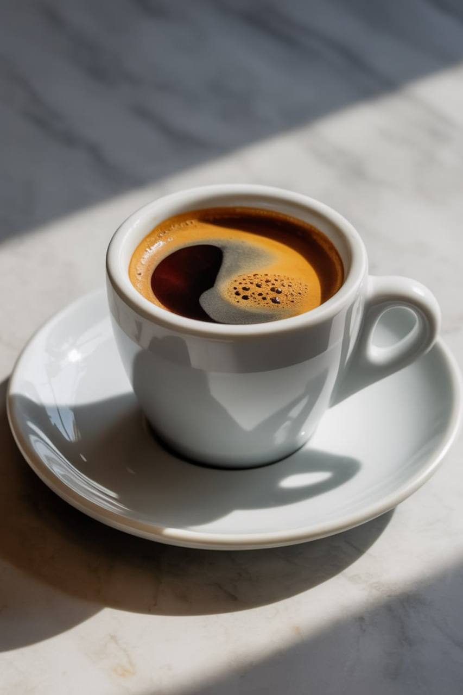
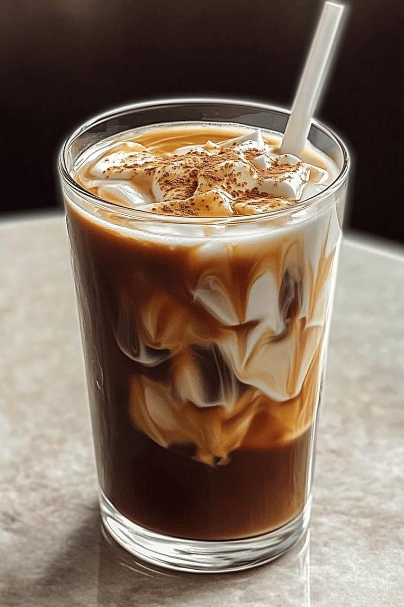

Our Coffee Selection
Discover our unique blends and carefully selected single-origin coffees, each with its own flavour, aroma and recommended brewing method.
Americano
ColombiaA smooth and refreshing coffee made by combining rich espresso with hot water.It has a clean flavour and is perfect for coffee lovers who prefer a lighter cup.
Tasting Notes
Caramel, chocolate, nutty
Recommended Brewing
Espresso + Hot Water

Espresso
BrazilA concentrated coffee with a rich aroma,full body and bold flavour. Its smooth cocoa and nutty character creates a satisfying and traditional espresso experience.
Tasting Notes
Cocoa,hazelnut,brown sugar
Recommended Brewing
Espresso Machine
Cappuccino
EthiopiaA balanced combination of espresso, steamed milk and creamy milk foam.It offers a smooth texture with gentle sweetness and a rich coffee flavour.
Tasting Notes
Floral,citrus,honey
Recommended Brewing
Espresso Machine
Latte
Brazil & ColombiaA smooth and creamy coffee made with espresso and steamed milk, finished with a light layer of foam.Its mild coffee flavour and silky texture make it ideal for a relaxed coffee break.
Tasting Notes
Milk chocolate,caramel,roasted nuts
Recommended Brewing
Espresso Machine
Mocha
Brazil & ColombiaA rich and idulgent coffee combining bold espresso with chocolate add steamed milk.Its smooth texture and sweet cocoa flavour make it a popular choice for customers who enjoy a dessert-style coffee.
Tasting Notes
Dark chocolate, cocoa, caramel
Recommended Brewing
Espresso Machine

Cold Brew
Colombia & BrazilA smooth and refreshing coffee prepared by slowly steeping ground coffee in cold water.The longer brewing process creates a naturally sweet flavour with low bitterness, making it ideal for a chilled coffee drink.
Tasting Notes
Chocolate, caramel, nutty, smooth
Recommended Brewing
Cold Brew / Slow Steeping